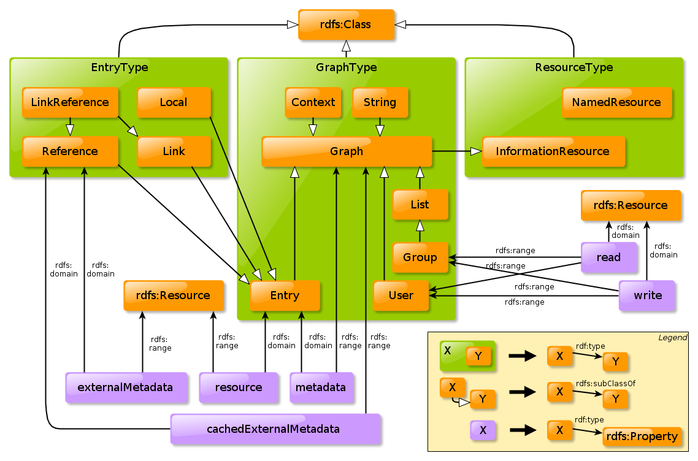

© MetaSolutions AB.
This document is the specification of the ReM³ describing the classes and properties that compose it.
This is a work in progress! Comments are very welcome, please send them to Matthias Palmérmatthias@metasolutions.se. Thank you.
An alphabetical index of ReM³ terms, by class (concepts) and by property (relationships, attributes), are given below. All the terms are hyperlinked to their detailed description for quick reference.
Classes: Context, Entry, Graph, Group, InformationResource, Link, LinkReference, List, Local, NamedResource, Reference, String, User,
This figure below gives an overview of the classes and properties defined in ReM³:
Here is example entry described:
URI: http://scam.sf.net/schema#Context
Context - A context is a set of entries expressed as an RDF graph containing relations to all its contained Entries.
URI: http://scam.sf.net/schema#Entry
Entry - An entry expressed as an RDF graph, including references to a resource, resource metadata, external metadata, and cached external metadata. The entry also contains access control information and provenance information.
URI: http://scam.sf.net/schema#Graph
Graph - A retrivable RDF Graph.
URI: http://scam.sf.net/schema#Group
Group - A group expressed as as a list of Entries corresponding to users. The group is expressedan as an RDF graph containing a rdf:Seq pointing to the entries.
URI: http://scam.sf.net/schema#InformationResource
Information Resource - A resource that has a retrievable representation.
URI: http://scam.sf.net/schema#Link
Link entry - A link entry is an entry where the resource is external, that is, not contained in the same system (or context) as the entry itself. Typically links to webpages are modeled as link entries.
URI: http://scam.sf.net/schema#LinkReference
Link-reference entry - A link-reference entry is an reference entry that also has metadata locally. Such local metadata typically complements the external metadata.
URI: http://scam.sf.net/schema#List
List - A list of entries expressed as an RDF graph containing an rdf:Seq ordering the entries
URI: http://scam.sf.net/schema#Local
Local entry - A local entry, that is where the resource is contained in the same system as the entry itself.
URI: http://scam.sf.net/schema#NamedResource
Named Resource - A resource that is not an information resource, that is, have no retrievable representation.
URI: http://scam.sf.net/schema#Reference
Reference entry - A reference entry is an entry where both the metadata and the resource are external, that is, not contained in the system (or context) as the entry itself. The external metadata is pointed to via the externalMetadata property and if there is a local cache of the external metadata it is pointed to via the cachedExternalMetadata property. Typically library resources are suitable to describe as reference entries.
URI: http://scam.sf.net/schema#String
String - An string expressed as a single statement in an RDF graph. The subject of the statement is the URI to the information resource holding the RDF graph the predicate is rdf:value and the object is the string itself.
URI: http://scam.sf.net/schema#User
User - A user expressed as an RDF graph.
(1st version)